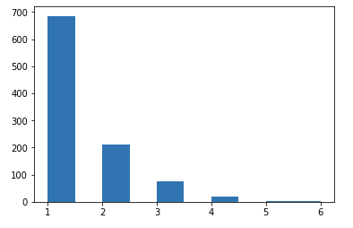

The Kubernetes (k8s) ecosystem has gone crazy for sidecar containers.
Sidecar containers (sidecars) are auxiliary containers, not part of your application, that provide additional support to make it work.
Along with your application, sidecars can be used to inject secrets, ship logs, or power a service mesh.
Although there are some advantages to Sidecars over traditional daemons, I would like to make the case that they are actually and inferior solution for a company that has the resources to provide a platform to its developers.
The alternative is what I will call “the daemon pattern”.
Background
I’m a general believer that strong platform teams at a company are (can be) development multipliers. These platform teams build infrastructure, shared tooling, and heck probably the k8s cluster that these sidecars run on! If you live in a world where this is no separation between an infrastructure team and a application team, then maybe this blog post is not for you.
Sidecars Con: Deploying N x M Things
The very first thought I had when I heard about the sidecar pattern (as compared to the traditional “daemon pattern” was: “wow, that sounds like a lot more resources required to run the same things!
Certain compared to the existing platform I worked on, which had daemons for doing all the normal supplemental things (logging, metrics, service discovery, secrets, etc), the sidecar pattern represented a potential explosion of processes to get (on the surface of it), the same job done.
Given a cluster of:
100 Nodes
1000 pods
5 auxiliary processes to run
Would you rather have 5000 things (sidecars) running, or 500 (daemons)? Don’t forget to add sidecars to all your cron jobs, spark executors, and stateful sets too!
What about configuring, getting the logs of, and monitoring those things?
With the daemon pattern, the auxiliary processes scale with the number of nodes, and in general goes down as servers get larger over time. With the sidecar pattern, the number of processes scales up with the number of pods you want to run, and usually goes up as you add more things.
Compared to the daemon pattern, the sidecar pattern consumes more compute resources as well as management resources.
Sidecar Con: Whose Job is it Anyway to Run These Things?
I really do feel bad for those organizations where the “platform team” provides only a raw k8s base, or maybe a team that “just uses {cloud provider’s k8s as a service}". Whose job is it to actually add, upgrade, configure, monitor, and maintain all these sidecars?
With the daemon pattern it is pretty clear to me that it is not the application developer’s job to maintain system daemons. Maybe a logging subteam is responsible for keeping the logging platform up (even if it isn’t literally a daemon on the local host). Maybe it is just a big catchall for the “ops” team.
With the sidecar pattern, it isn’t as clear. On the plus side, it is empowering for a dev team to copy paste some YAML to get a Vault Sidecar, but maybe every app shouldn’t need to have them?
I think the daemon pattern provides better separation between “infrastructure versus application”, which should unburden application developers and let them provide more business value.
Sidecar Con: The Burden is on the Developer to Understand their Lifecycle
As noted elsewhere, at the time of this writing, developers have to be aware of the interaction (lifecycle) of containers in a k8s pod, otherwise weird things happen. Developers cannot safely assume that the sidecars are ready before their application is. They also cannot assume a particular shutdown order. Also for jobs, the main job must kill the sidecars.
This kep will fix these things by making “sidecar lifecycles” a first-class object in the pod spec.
But you know, what if developers never had to worry about that, and instead could always safely assume that they could emit logs, or that secrets would be available, or that service discovery would be up?
With the daemon pattern, developers can take for granted that all the necessary daemons are already warm by the time their application starts, and that their application can also shut down gracefully without having to interact with anything else. With the daemon pattern, the only process the application developer needs to worry about is their own.
Sidecar Con: Platform Teams Have Less Control Over the Infrastructure
If the company is in a situation where there is Security Team that oversees the Vault containers, sidecars, security best practices, etc, what is their experience like in the sidecar world compared to the daemon world? Likewise with a logging team or a service discovery team.
In the sidecar world, how do you perform an upgrade of say, the service mesh? Unless you are going to do manual changes, the normal way you would do this is with a rolling restart. This sounds straightforward: it uses the existing safety built into k8s, the pods go up and down in a structured way.
But what if you don’t want to roll every application to do an infrastructure upgrade. What if you don’t want to restart that 48hour batch job, or your database team doesn’t want you to restart their stateful sets (even with pod disruption budget).
With the daemon pattern, upgrading and managing those daemons is mostly a solved problem (I really like this hitless systemd fd handoff thing). Upgrading daemons in general doesn’t require impacting the application. Infrastructure teams usually don’t have to ask permission from the application team to do things. They are much more decoupled, and I think that is a good thing.
Sidecar Pro: Dragging Along Exactly What you Need
On the plus side, sidecars do allow you to deploy auxiliary processes in a much more focused way. This is especially important for service-mesh sidecars: the configuration is tailored to fit the application. The logging daemon only is responsible for your application logs, and can’t be overwhelmed by a noisy neighbor, etc.
Sidecars do make it so that your application is 100% self-contained. You can use any k8s-as-a-service, and deploy your pod as-is (maybe). You can use a k8s node with minimal system services (all you need is the kubelet).
Conclusion
I see the appeal of sidecars: they make it simple to add new functionality to your pod. I think they can also get out of hand.
I don’t know what the future holds.
I could easily see the industry double down on more sidecars, or relax and move to more daemon sets with more sophisticated ways of doing calls between the pods and those daemons.
I know that for at least the things I build, I’ll be advocating for as few sidecars as possible, for the sake of the developers and for the sake of the infrastructure engineers.
Appendix: The Link-Local IP Trick
The “Link-Local” IP trick is using an IP from the 169.254.0.0/16 space to get an IP that can be reached by other local pods.
Amazon AWS uses 169.254.169.254 for this, but you can pick your own at your own organization.
With a little network glue, you can run your local daemons on your nodes using a link-local IP, then all your pods will be able to reach it (you can’t use a 127.x IP, because each pod will have its own network namespace and its own localhost). I’ll leave it as an exercise to the reader to handle security and proper service attestation for requests to that IP.
I’ve worked at Yelp for about six years, working with our container platform in production for about four of those years.
The plaform is called “PaaSTA” and there are a number of public talks about it. It is also open source.
When we started PaaSTA, it ran on Mesos, and now we are most of the way through our migration to use Kubernetes (k8s).
I’m in a relatively unique position to have production experience with both technologies.
This blog post will have some personal opinions on both platforms, which derive from experience, and also just thinking about the two a lot.
This post is not some sort of feature comparison.
If you are actually evaluating these schedulers, I recommend reading more about the actual technical differences between the two systems, like this comparison and this one.
My blog post, however, is not supposed to “inform” you about the differences between Mesos and k8s, it is “persuade” you to use and adopt the same principles that k8s uses, instead of the Mesos “approach” (where approach here is a combination of community, timing, and lots of tiny decisions along the way).
Mesos vs k8s: I’m not actually not that interested in the Community Support
“Community” is often cited as an important reason for picking a particular technology.
You want to pick the winning horse! 12,000 Kubecon attendees can’t be wrong!
In this case, I’m not suggesting that this is something that Mesos got wrong and k8s got right.
I think they both got it right.
My point here is that I don’t want you to judge the technical book here by its community cover. You know what has a huge community of users: Microsoft Windows, Openstack, and JQuery.
It is true that with a large community of users, new feature are developed, bugs get squashed, etc.
But equally, a project can make a turn into a direction that is not useful for your organization, or its leadership can get diluted with committees, etc.
Sorry for the mini rant before we actually get started.
Mesos vs k8s: The failure of the two-layer scheduler model
I remember being at Mesoscon 2015 and being excited at the handful of new frameworks coming to Mesos, and being enamoured with its two-level scheduling model.
“What a great design”, “such great separation of concerns”, were thoughts I had at the time.
I even felt a tinge of smugness. It kinda felt like when I first understood the “reversed” server/client model of X.
But why do I consider this model a failure?
The limitations of this model become apparent when you need to do something like:
We can’t ensure that a task is running on all slaves in the cluster for following reasons:
we can’t guarantee that there are enough resources on every machine
in a multi framework cluster, we don’t know if we will ever receive offers for all the machines
we could never tell if it has been deployed successfully, because we don’t know about all the machines in the cluster
I think this would need direct support from Mesos.
It just isn’t possible is Mesos, and will never be. Why? Because the two-layer scheduler model means that schedulers on Mesos are not supposed to know about the nodes that are out there. Separation of concerns of course.
In k8s, all the schedulers / operators / controllers can see the entire state of the world. They have unrestricted access and are expected to play nice together. This blurring of concerns allows k8s to have much more rich capabilties, like DaemonSets, StatefulSets, etc.
This is only possible because of this blurring of layers, and is one thing that k8s got right that Mesos got wrong.
Mesos vs k8s: Client Libraries
What is the official Mesos Client Library
? libmesos, as c++ .so file. There is also an officially supported Java wrapper around libmesos. Everything else is community-contributed. That means >3 golang libraries, >2 python libraries, and at least one Scala one.
For k8s? Official libraries for Go, Python, Java, dotnet, JavaScript and Haskell. Sure, they are leveraging the fact that they have OpenAPI specs. There are even more user-contributed ones, but honestly I’m not really sure why they exist.
Mesos never really got this right. Writing good Mesos frameworks was always hard, and continued to be hard because the API and associated client libraries were never great. K8s gets this right by having a solid api and having solid, official, and up-to-date client library languages for the most popular languages in the industry.
Client libraries should not be left to the community. It create fragmentation and raises the barrier to entry when it comes to integration with your thing. k8s realises the power of good apis and good client libraries, it got this right when Mesos only ever supported libmesos, and the Mesos framework explosion never happened.
Mesos vs k8s: Providing the Kernel Versus Providing the Distro
Mesos was always touted as “the kernel of the datacenter”. It is true, in the same sense that the Linux kernel does process scheduling, so does Mesos. Linux was successful in the industry, why not Mesos?
But wait. In a different sense, “Linux” isn’t successful per-se, but Android is. RedHat is. Ubuntu is. These are Linux distros. Linux (a kernel) by itself is almost useless!
K8s did this right by providing a Distro, which was useful to real end users. This “distro” provided:
A kernel (the k8s scheduler, not the Mesos scheduler)
A solution for daemons
A solution for stateful processes
A way to run cron jobs as well as long-running services
Service discovery and routing
Secret handling
And much much more
DC/OS is the only Mesos distro I’m aware of. Why didn’t it take off? My best guess is that it was too targeted towards Enterprise customers first. There was never “DC/OS: The Hard Way”. Mesosphere’s Marathon did get some advanced features, but there was never a great way to provide these kind of useful primitives (load balancing, scheduled jobs, secrets) to be useful to other frameworks too.
What k8s got right was providing a lot of services you need to get going, even if they are simple implementations of them, and made all those services available to every other k8s’y thing via a common API. Everything on k8s could assume there was an etcd cluster available, that there was load balancing and services, and secret handling. On Mesos, no such assumptions were safe.
Mesos vs k8s: Mesos Framework Libraries versus Operator SDKs
This is sorta like the client libraries issue, but at the next level. How does one write automation integration with Mesos? You go through the difficult task of writing a framework. Sure it may take seconds to get something running, but it will take a long time before the operator is production ready. Writing a good Mesos Framework isn’t easy.
The DC/OS Commons as the closest thing to a good Mesos Framework SDK. It also never really took off.
Conclusion
When this blog post is titled “what k8s does ‘right’", you should ask, “right for who?". The answer to me is, right for most infrastructure engineers want a platform to run all their different workloads on. Not a distributed systems SDK (Mesos).
The next thing you should ask is: “Isn’t this an unfair comparison? K8s is more like DC/OS, Mesos is more like the k8s-scheduler component.” To which I say: Kinda. I think it is more like Mesos is k8s just without the replica-set/deployment controllers and good API (those were left to frameworks like Marathon to implement). But sure, it isn’t fair.
In a sense, Mesos is a tool that does “one thing well. In the right circumstance, it can be the right tool for the job.
Kubernetes do one thing well, it does a lot of stuff “ok”, but leaves room for infrastructure engineers to replace parts and integrate. It also met developers where they are at, by giving them good client libraries in their native language, primitives to build operators on, and lots of the “things you just need to get going” (secrets, service discovery, etc) to make things work.
AWS likes to use the pharse
“undifferentiated heavy lifting”
to describe what AWS does best: all the things that everyone hast to do anyway with computers. Commonly these are things like running servers for you, hosting files, and managing a network.
Let AWS handle the boring things so that you can focus on what matters most for your business.
Sounds great! I certainly do not want a job that could otherwise be commonditized and turned into an API.
In the world of “Cloud” providers, who’s mission is to provide
“undifferentiated heavy lifting” for other companies, is there even room for
infrastructure teams to provide value to their organizations? Or are they just barriers to the onramp that is the Cloud-computing-dream?
Some firmly believe the answer is unequivocally “No.” They believe that
developers should be given an AWS account and then let loose, given
all the freedom, flexibility, and power to do their thing.
Some believe that any “wrapper” or “abstraction” or “glue” on top of AWS is a type of gatekeeping, a relic of old types of beliefs that no longer apply in the new DevOps world.
Others believe that companies need a “platform team” to build abstractions on top of cloud providers. Examples of company platforms include Target’s TAP and Atlassian’s Micros.
Where do infra teams fit in? Should they be the gatekeepers to all things AWS
or metal? Should they re-invent all of AWS’s wheels? Should they be handing out
root access to developers? Should developers even need root access?
Where should the line be drawn when it comes to giving developers the “power of the cloud” and giving them an abstraction layer? A more famous engineer says that building internal PaaS’s is an Anti-pattern, but maybe there is a more nuanced answer.
Start By Drawing A Line
This line represents the abstraction layer over your servers, whether that be physical servers or cloud-provided ones. It also includes the abstraction layer over services, like on-prem load balancers or cloud-provided ones.
When The Line is “null”
At first, with no infra team, the line is all the way towards the raw
resources. Developers are given an AWS account, a budget and the docs.
In AWS developers might use Code Deploy or Beanstalk to get their
code out.
Great! Sometimes this is called “NoOps”, because there is no “operations” or infrastructure teams at all, it is just developers living blissfully in the cloud with no restraints :).
If there is only one development team, and one application, this is a great way
to start. No need to setup Kubernetes (k8s), microservices, or install a
service mesh. Even if there is only one person on the team who setup these AWS
resources, that can be fine, because there isn’t much else to do? Until there
is.
When One Team Grows Into Two
With two developer teams, you will have your first opportunity to leverage gains through sharing. Maybe it will be a library you both share for interacting with infrastructure. Maybe it will be shared terraform modules to help reduce boilerplate. Maybe it will be a shared Ansible repo with playbooks.
Certainly at this stage, it doesn’t “feel” like one team is trying to isolate, hide, or gatekeep them from the underlying infrastructure, right?
When Two Dev Teams Grow Into Ten
With Ten development teams doing their thing, it will become pretty clear that there is shared code or infrastructure components that are now powering your business. Things are spreading and diverging. Maybe one team wants to try out k8s and these new “containers” that everyone keeps talking about. Maybe one team has found “Spinnaker” for doing pipelines and thinks the other nine teams should try it.
As a organization, you are ready to make a call: Should we let the ten teams just do their thing and let things evolve organically, or should there be a dedicated team that is just in charge of building and maintaining the shared stuff?
I don’t think I need to make the case that, at a certain scale, some sort of shared-infrastructure-core-compute-platform-devops team is worth it. Infrastructure at scale is complex, and expertise in infra can be a tide that raises all boats. But how do you prevent that tide from drowning your other teams, or even worse, holding them back from the “sunken treasures” that are the native cloud technologies? Where do you draw that infrastructure line boundary?
Push That Line Where It Makes The Biggest Impact
As with most things, the answer is nuanced. Where the line is drawn between raw resources and your users will depend on your business, and how much you stand to gain by building abstractions.
The trick is this:
With each abstraction you build, ensure that the users of
that abstraction are empowerd to build bigger things on top
of it, and not held back by it.
For example, let’s say you built a Terraform module that abstracts away the fact that you deploy to an east and west EC2 region. Is that module empowering your users because now they don’t have to be concerned about which region to deploy to (because it is figured out automatically), or does it hold them back, because the design of the module limits the fields they can use, which limits their ability to “beak out” of the module?
Example 2: Your “devops team” builds and supports tooling to do deploys via Ansible using custom playbooks. Is that set of tooling empowering your dev teams by providing a safe experience when deploying, providing for rollbacks, hitless deploys, and standardized tooling? Or is it holding teams back, because the tool isn’t actually very good and doesn’t deploy things in a way that is conducive to the actual type of application the devs are using?
The mission of infrastructure teams is to push “against” (work with) infrastructure as a service to make it more useful to their company.
They do this by boiling away the unnecessary parts of “the cloud” till all that is left is exactly what developers need, “getting out of the way” of the business.
At the same time, infrastructure teams need to always be sure that they are not unintentionally preventing developers from doing their jobs through restrictive and crappy tooling.
In the end, the best tooling is the kind where developers don’t even know they are restricted in what they can do, because all their actual needs are taken care of. They are not held back by the inability to make custom tags, because all the tags they need are automatically generated for them. They are not held back by the inability to launch a custom EC2 instance, because whatever need they had to launch it in the first place is already met.
What does this thing do? It is kinda like a k8s
operator (it’s a controller) that
has custom resource definitions for things to launch another k8s
cluster, with a bunch of
cloud providers.
It is kinda like if Terraform was re-imagined as a k8s operator, but
only for launching other k8s clusters, and not general purpose.
If you are already familiar with k8s, these may look familiar! It isn't
a coincidence of course. This is what it looks like when k8s users try
to make an API for launching machines.
But in general, it provides an k8s API endpoint to launch more k8s
clusters in a declarative way, just like anything else in k8s.
How Does the k8s Cluster Lifecycle API Solve This Problem?
The k8s lifecycle thing is very new, and a very specific goal: implement
enough "cloud" api calls to be able to get a k8s cluster running.
They provide a couple of AMIs, but encourage you to bring your
own.
They are working on a clusterctl command, analogous to kubectl.
Like Terraform (and any other k8s'y things), the API is declarative; you
tell k8s what kind of clusters you want to exist, then the controller
takes over and reconciles that with what is out there.
Also like Terraform, you still have to provide all the details about
what you want to launch, like AMIs, security groups, vpcs, etc.
Unlike Terraform, the Cluster Lifecycle API will never be a general
purpose infrastructure thing, it will only ever launch what they need to
get a k8s cluster up (ec2 nodes).
Is This a Good Thing?
Good for who?
While I do like the pattern of empowering k8s to launch it's own
infrastructure (a la Spotinst Ocean),
I don't think this Cluster API is right approach for intermediate-level
infrastructure team.
I think the nuances of what to launch and how to launch are massive.
I don't think the Cluster API will ever be nuanced enough to do
all the things that are required to run all the things.
That is OK. If all you need to do is launch other k8s clusters, then this API
is for you! If you need to launch any other “cloud” resource, then you will
have to end up reaching for another tool. Are you willing to have two different
ways to launch things? I don’t know, maybe I just really like Terraform.
On the other hand, Terraform is flexible, but not dynamic. It doesn't respond
to events. It has the benefit of git-commiting the state and being easier to
reason about, but it can't really make new k8s clusters "on the fly". It has
no “API”.
I think that is OK. Do we need to launch new k8s clusters on
the fly? I think we need to be able to launch things on k8s
dynamically, but I don't think we need whole clusters to exist without
human interaction.
But I do think that the thing that launches k8s nodes should be the same
thing that is doing the cluster autoscaling control loop, and should be
empowered to launch instances that it needs.
K8s as a Universal Infrastructure Control Plane?
The pattern of using the k8s API machinery and custom resource
definitions to control things that are not "native" k8s objects, kinda
reminds me of New Relic's
Inventory Service.
It keeps track of their hosts, and works like a
CMDB,
using just the k8s api server and custom resource definitions. They
don't even run any kublets!
This idea is articulated a bit more in this blog post about k8s being a
general purpose
"Ops"
control plane.
The k8s pattern provides a bunch of things at once that are opening up
new ways of thinking about general infrastructure problems. I think
these things are:
A highly available hosted REST api with validation, schemas, CRUD,
etc, with custom endpoints, hosted by k8s
A pattern of declarative YAML-based resource definitions
A tight control loop running for these things, reconciling state
with the world, with watchers, queues, and all the
things you
would need to write this loop efficiently and correctly
A centralized place for that control loop to run, in a singleton way
A decent key/value store to host stuff
A free CLI to interact with those resources (kubectl get tronjob)
Authentication (authn) and Authorization (authz) + Role-based Access
Control (RBAC)
Secret storage
This is a great pattern to build general purpose infrastructure stuff.
It is starting with k8s objects now, but as you can see it is expanding
to store and launch k8s clusters,
arbitrary AWS resources,
Sensu Clusters, New Relic's
inventory data, SSL Certificates, etc.
I predict that we'll see this as a Universal Infrastructure Control
Plane, because it is just so convenient, and the declarative pattern is
so often what you want in infrastructure!
I think many infray things could be re-imagined in the CRD + Operator
world, and would be way easier to implement.
It will take time though. k8s will have to become ubiquitous first, then
the operator pattern will have to become well established, then we'll start to
see infrastructure teams want to piggyback on all the goodness and
extensibility that k8s provides.
The dataset with all the quotes needs some data cleaning love though.
Cleaning The Dataset
The CSV has over 1,400 quotes in it. For every minute, there may be multiple quotes (“Midnight” has 26 unique quotes). Some minutes of the day do not have any quotes.
As much as possible I used tools to programmatically clean this data and used git diff to check the output at each step.
The original database of quotes comes from quotes collected by
The Guardian
for an art installation.
I used an annotated version from of that database built by Jaap Meijers for a
Kindle-based
version of this clock.
To fit on my tiny epaper display, I had to clean up the dataset.
Quotation Mark Cleaning
The database is full of lots of quotes, as in quotation marks. Lots of them. Triple-double quotes, smart quotes, smart single quotes, backticks, etc.
Vim macros help me manually clean up the zoo of quotation marks and strip out all the extra ones. Given the limited number of characters I can display on the watch face, I don’t think there is any need to put quotes around the quote itself, just print the thing:
-"""I am going to lock you in. It is-"" he consulted his watch,
-""five minutes to midnight. Miss Granger, three turns should do it.
-Good luck."""|Harry Potter and the Prisoner of Azkaban|J. K. Rowling
+"I am going to lock you in. It is-" he consulted his watch,
+"five minutes to midnight. Miss Granger, three turns should do it.
+Good luck."|Harry Potter and the Prisoner of Azkaban|J. K. Rowling
-"We have heard the chimes at midnight."|Henry IV
+We have heard the chimes at midnight.|Henry IV
Duplicates
By sorting the dataset, duplicate quotes become more visible. Literally identical quotes can be removed programmatically:
Many quotes are used multiple times for multiple minutes, so it isn’t safe to blindly remove any quote that is used more than once.
Manually Shrinking the Text
Many quotes are very long and contain lots of context. Some quotes are very floral and contain long run-on sentences.
I couldn’t think of a programmatic way of reducing the length of the quote to less than 180 characters.
This step was mostly manual work, tool-assisted by having the code generation python script raise an exception if it parsed a quote longer than 180 chars:
-It was eight minutes to midnight. Just nice time, I said to myself.
-Indoors, everything was quiet and in darkness. Splendid. I went to
-the bar and fetched a tumbler, a siphon of soda and a bottle of
-Glen Grant, took a weak drink and a pill, and settled down in the
-public dining-room to wait the remaining two minutes
-|The Green Man|Kingsley Amis
+It was eight minutes to midnight. Just nice time, I said to myself.
+Indoors, everything was quiet and in darkness.
+|The Green Man|Kingsley Amis
I tried to keep the time string located somewhere in the middle of the quote, with context around it. I took some artistic license in shortening the quotes and replacing the missing text with ....
Removing Non-ASCII Characters
I didn’t bother updating the epaper library to support Unicode characters on
custom fonts. That would be a nice addition someday.
Till then I used sed to replace non-ascii characters en-masse with a
script.
sed 's/é/e/' $1 | \
sed "s/’/'/g" | \
sed 's/—/-/g' | \
...
Duplicating AM / PM Timed Quotes
Many of the quotes in the quote database do not have any indication that they are specific to AM or PM. For example:
"15:23": "Three twenty-three! Is that all? Doesn't time - no, I've already said that.."
There is no particular reason this quote couldn’t also work for 03:23 as well.
This procedure is fuzzy, and I required jupyter notebook to accomplish it.
In other words, out of the 1440 unique minutes of the day, before duplicating
ambiguous AM/PM quotes, I only had quotes for 895 of those minute slots, and
now I have 999 minutes out of those 1440 unique slots. Now there are only 441
minutes were I do not have a quote.
Analysis
If there are 441 missing slots, then how inaccurate is this watch?
Using the same notebook, we can iterate through the minutes of the day, and find the longest gap between quotes.
After AM/PM duplication, the longest gap is 6(!) minutes, between “05:46” and “05:52”.
In [268]:
print(newbuckets["05:46"])
"He wrote a legal-sounding phrase to the effect that the sentence had been
carried out at 5.46am, adding, 'without a snag'."
In [269]:
print(newbuckets["05:52"])
"At 5.52am paramedics from the St. Petersburg Fire Department and SunStar
Medic One ambulance service responded to a medical emergency call..."
But what about the histogram?
If I’ve done the math right:

68.7374749498998 of the time is within 1 minutes
90.08016032064128 of the time is within 2 minutes
97.59519038076152 of the time is within 3 minutes
99.49899799599199 of the time is within 4 minutes
99.8997995991984 of the time is within 5 minutes
100.0 of the time is within 6 minutes
“Build-vs-Buy” is a false dichotomy, you are always building, always buying
“This is not your ‘Core Competency’” is a faux trump-card, everything is a spectrum
Past experience is overrated, what matters for hiring is your ability to learn
Understanding The Trade-Off
Fully understanding the build-versus-buy trade-off requires a bunch of
different context to really get right. At first glance you might think that
you only need to really understand:
The problem you are trying to solve
How the thing you are looking to buy solves the problem
But in reality it is much more nuanced than that. Most of the reading out there
about the build-versus-buy trade-off is written with “enterprise” software in
mind, and evaluate things on a very first-order level. Concerns like:
How well can this software integrate with other things?
How much does this software cost?
How much time will it take to integrate the software and make it meet your
organizations’ needs?
These are all important questions to ask, but there are higher-order concerns
that take some time to fully appreciate like:
In the long run, can your developers build a solution that provides more
long-term value to your organization? (even if in the short-term it costs
more and takes longer to build?)
How will your (in-house or external) users “feel” when they notice that your
solution is based on an off-the-shelf (bought) product?
Can you account for the in-house skills and expertise that would be
simultaneously developed (and required) if the solution was developed
in-house?
Will there be any developer or user attrition if you built versus if you bought?
These are not as easy to answer, but the answers to them may be even more
significant than the $$$ figures your vendor may come up with.
I’ve never been really satisfied with the “build-versus-buy” trade-off in
general, mostly because throughout my entire career, it has never been a
dichotomy: I was always building, and always buying.
Understanding the False Dichotomy
The false-dichotomy comes from the fact that everything “bought” requires
integration, and it is building of that integration that actually builds
the value to your organization.
At the same time, we are always buying. Even when it seems like we are
choosing the “Build” option, are are still buying, it just the we are buying
libraries, frameworks, and other components to build the solution. Things are
not built in a vacuum.
It is all building, and all buying. There is no such thing as a turn-key
solution, it is just a spectrum between simpler and more complex products.
It is in the building that you provide value to your organization and to your
users. It is in the buying that you “stand on the shoulders of giants” and
become a more powerful engineer by building on top of existing engineering.
“Core Competency”: The Ultimate Faux Trump-Card
Sometimes it is “simple” to describe some build-versus-buy decisions by framing
them in terms of what the organization’s “core competency” is. Sometimes it is
so simple as “if it is within our core competency, then we build, otherwise we
buy”.
What does “core competency” really mean? Before software was eating the
world,
“core competency” could have meant something very different. But now software
is seen as a universal multiplier for every business, regardless of what they
do. What does software have to do with Nike’s
core competency? Are computer servers Amazon’s core competency? What would the
core competency be of any retail organization? How about a game design company?
What about a high-frequency trading firm?
The answer is blurry in this world, because software in so fundamental to the
world we live in. Software is a multiplier for all levels of any business, from
HR to Product to Manufacturing to Retail, it knows no bounds and powers all the
things. Discarding an opportunity to build something that enhances your
business is a mistake.
Case Study: Game Design and Looking at Game Engines
Game design, like any other software engineering pursuit, also involves many
build-versus-buy decisions. From assets, to engines, to voice acting, to motion
capture, there are many many micro build-versus-buy decisions to make when
developing a game. In some sense, every one of these decisions fits into
their “core competency”. In another sense, building your own game engine for
example, sounds like a decision that 90% of game studios should choose “buy”
over build. Is developing your own game engine in-house included in their “Core
Competency”? Who knows.
The real question is: will buying an existing Game Engine provide more value to
your game than what your team could bring to the table, or would it hold your
game back from what you are trying to achieve?
If the year is 1993 and you are building Doom, then no, buying an engine will not help you achieve your goals. Building an engine will help you build what would make your game unique.
If the year is 2017 and you are building Fortnite, then yes, buying an engine will help you build your game faster by focusing on what makes it unique.
This doesn’t imply that we should not still be building new game engines in 2020. Just that fewer people should.
On Personal Engineering Capital
As an engineer, how should one look at the build-vs-buy trade-off in terms of
building personal engineering capital? That is, how does career advancement
come into play when deciding when to build versus when to buy?
I see this as a trick question. With two years of building on a codebase
written in an
obscure language,
there is still room to gain new skills, and level-up the state of the
environment you are in, leaving it better than when you got there.
On the other hand, does buying an existing
software package
mean you won’t be creating any “personal engineering capital” for yourself?
What does this really mean? Is this just a fancy way of saying “I want to work
on something that will look good on my resume."? Or is it even simpler than
that: “I want to work on something that is different (or in a different
language) than what the company needs."?
Although this comes from a position of privilege, I don’t think that it is my
current employer’s job to set me up for my next job. Not only that, I see the
both the opportunity to buy and the opportunity to build both as ways to
better my skills and be a useful engineer.
Buying an off-the-shelf container orchestration system
allows me to build amazing things on top of it. Things that would be impossible to build without help from such a product. Likewise, building a company-specific
ETL platform allows me to understand a problem more deeply, but I would still need to “buy” other
software to make it work.
I’m personally not in it for the glamour, I’m in it for the problem-solving and the tech.
I can also say, coming from a person who interviews a lot of candidates for my
own job, past experience has much less of an impact as you might think. In a
world where Javascript frameworks come in and out of vogue over the course of
months, your number one hireable quality is the ability to learn new
things.
Conclusion
I don’t think the key to a fulfilling software engineering career involves
building everything out of Rust or whatever is the hottest language out there
right now. Likewise, if you feel like your job is “just” gluing pre-built
things together, well guess what, the value comes from that
glue,
and the thing you are building is an even bigger platform on top.
If possible, make your users not care about the intermediate form
“Code as Configuration” is not worth it
YAML isn’t so bad if you can be strict
A Brief History of Configuration as Code
Configuration as Code is not new. There are a few subtle distinctions that are worth pointing out:
Thing
Historic Example
Modern Example
Config as Config
Apache2 (.conf)
Sensu (.json)
Config as Code
Sendmail (.cf)
Skycfg (.cfg)
Code as Config
C (config.h)
Aurora (.aurora)
Config as Config: Config files which is never “run”, but is interpreted
as-is by the consuming program.
Config as Code: Config files which are executed in way, which output an
intermediate config language, which is then consumed by the program.
Code as Config: Config files which are executed directly by the program.
There is no intermediate representation, it just is code.
This blog post is about the last two.
An Example Case Study: Nagios Versus Sensu
Nagios is a monitoring tool built in
2002. Sensu is also a monitoring tool,
built around 2011. There are plenty of differences, but for this case
study I’m going to focus on how these tools are configured by their users.
Nagios’s configuration file format is bespoke, but you can use the nagios
binary to verify its correctness. It has a everything from low-level resource
definitions
to object templating and
inheritance
as well as macros and variable
expressions.
Its configuration language is designed to be currated by humans. This hasn’t
stopped engineers from writing parsers ([1],
[2],
[3]) so they can
write Nagios config as code.
Sensu’s configuration file format is JSON. It has very limited variable
expression.
Its configuration language is designed to be deployed with machines
(configuration management tools). The Sensu JSON files were never intended to
be written by humans. It was always intended to be a
“configuration-management-native” system.
To put it another way, the original Sensu
authors wanted
the JSON to be an “intermediate form” (where the human readable form was the
users’ choice (chef code), then deployed to JSON for sensu to read, eventually
ending up as internal Sensu (ruby) objects).
Why? Why would the Sensu authors make their system use configuration format
that is hostile to humans (JSON)? I think they were building it this way for two reasons:
They were building this tool for the long haul. Humans will be editing their
monitoring config (Sensu or Nagios) for years, so they wanted to meet them
where they are at, and make it as easy as possible for their users to use the
common language of their environment (configuration management tools).
As a reaction to the “complexity” of the nagios configuration model, the
authors wanted to leave room for programmatic and dynamic configuration. In
the modern error, hosts come and go at will, checks need to be redefined based
on other programmatic events, and in general the world is not a static set of
hosts and checks per the Nagios model. Configuration as Code is one way to make
room for this dynamic.
DSLs or Making Your Users Not Care
DSLs are a mixed bag.
Evaluating a DSL for its usefulness comes down to one key thing:
How much intellectual effort does this DSL save me, compared to the
intellectual cost of understanding and working with the intermediate form
directly?
Upon initial inspection, DSLs can look like they provide no immediate benefits,
and instead look like they just add a layer of obfuscation:
It is naive to think that all this is is some alternative way to make JSON. The
real power comes from building abstractions on top, and allowing it to live in
the surrounding ecosystem of configuration:
This kind of integration was never possible with Nagios’s configuration
language, even with all its templates, inheritance, and variable
interpolation.
But for these users of Sensu, they never hand-made the JSON in the first place.
To them, the configuration management language they use is the config
language they use, they don’t care about the JSON intermediate form (for all
they care, it doesn’t even exist and is an implementation detail).
What About k8s DSLs?
Kubernetes’ (k8s) popularity, combined with it’s “almost human readable api”
format (when you look at it in YAML form), have created a cottage
industry of
tools built to deal with k8s’s “intermediate form YAML”.
There is a subtle difference though between all these tools and the Sensu
example above: people care about the intermediate form with k8s. For k8s, the
YAML is the k8s configuration language, so any tool that “compiles” to
k8s YAML must have the ability to allow users to inspect that intermediate
form.
For some reason (probably the fact that YAML is human readable and the kubectl apply command exists), we see it as the “primary” form, and not the
intermediate. We don’t see the same sort of standard held against Terraform.
Nobody really cares about the intermediate JSON that flows between Terraform
and cloud APIs, to Terraform users, the Terraform DSL is what matters.
YAML: A Beast That Can Be Tamed
The question to me is:
Is YAML the input format or is YAML the output format?
I think YAML is a fine input format for humans for DSLs and such. I think it
does not need to be an output format for computers to read, and gives a false
impression that humans should be meeting computers where they are at.
When YAML is used as an input format only, then humans can decide what the
inputs are, not the machines. When the YAML generated by humans is intended to
be used directly by an API (k8s in these examples), then there will be an
impedance mismatch.
I see a couple of paths for infrastructure developers to potentially take:
Say “no” to layers of obfuscation and “climb mount YAML”.
Decide that the amount of YAML is too much for a human to handle, and resort
to a “real” programming language to generate it (“Code as Configuration”).
Take a hybrid approach and template out the YAML (the “Helm” approach).
Make a DSL that can take in your format of choice, and output to an
intermediate form, and make your users not care what that is (the “Sensu
approach” in the example above).
For the record, I’m in favor of approach #4.
Is It “Code as Configuration” Worth It?
Some of the industry is pushing things in favor of approach #2. It usually
starts with a look at how much duplication there is in the YAML files, and the
urge to DRY out the
configs takes hold. Although YAML does have
built-in functions to help
reduce some duplication, they only operate on hashes.
When that is not enough, someone usually says “why don’t we just us Python?”
Well, you certainly can! At this point you are getting into “Code as Configuration” territory. Although I don’t think this is a good idea, if you think this is a good idea, then you might like some of these:
Dhall: Haskell-inspired general purpose language
for outputting config.
Pulumi: “Just Python” library for building cloud
resources with Terraform-esq declarative semantics.
Skycfg:
k8s-specific python library that outputs YAML for k8s consumption.
Ksonnet: A k8s-specific way of
templating/patching k8s manifests
Cue: General-purpose config language, superset of JSON for
Some day I’ll do a comprehensive blog post comparing all these tools.
Why do these tools exist? My best guess is:
The allure of DRY is very strong, and often we’ll trade extra complexity for the chance to not repeat themselves
The tool expecting all this config was never intended for humans to provide the input
The problem domain really is too complex to define with static configuration
When the problem domain hits that level of complexity, then the answer is not
config generation, the answer is a new level of abstraction and automation.
When you live in a dynamic environment when hosts come and go, do not write a
nagios hosts configuration generator and turn a static tool into a dynamic one.
Code As Config: It Make Building Seams Harder
Infrastructure changes, and the true “data gravity” is in configuration.
Having configuration in declarative config formats allows change, validation, and linting. It allows infrastructure developers to easily build “seams” around that configuration, adding new features, refactoring old ones, and upgrading configuration en-masse, without having to “refactor” a codebase.
Which of these DAG configurations do you think would be easier to transition to a new platform?
import os
from airflow import DAG
import datetime
from airflow.operators.bash_operator import BashOperator
DEFAULT_TASK_ARGS = {
'start_date': '2018-10-01',
}
dag = DAG(
dag_id ='my_dag_1',
default_args = DEFAULT_TASK_ARGS,
)
print_hello = BashOperator(
dag = (dag),
bash_command ='echo hello',
start_date = (datetime.datetime(2018, 10, 1, 0, 0)),
task_id ='print_hello',
)
print_world = BashOperator(
dag = (dag),
bash_command ='echo world',
start_date = (datetime.datetime(2018, 10, 1, 0, 0)),
task_id ='print_world',
)
print_world.set_upstream(print_hello)
See Ety’s boundary-layer and blog post for an example where it was worth it to them to define jobs in a declarative YAML format, instead of allowing developers to “just write python”.
YAML: Be Strict In What You Accept
YAML is a very flexible input language for humans, but in my opinion, too flexible. There are:
Just like any other flexible language, your organization will save time and avoid mistakes with a machine-enforced style guide.
Conclusion
You can come to your own conclusions, but I’ll tell you what I’ll continue to
do for the users around me:
I’m going to protect them from YAML gotchas, while making it a pleasure to
write the minimum amount of configuration they need to address their problem
domain
I’m going to build tools that protect users from the intermediate form, and
make it so they don’t care (a true abstraction)
I’m going to advocate against config-as-code or code-as-config, as I believe
it adds a new dimension of complexity where it is rarely needed. The best
code is no code.
Here are some thoughts how I think about being a great engineering mentor. To
me the most important thing is remembering “who to be”, and not as much as “how
to act”. You won’t remember how to act. You can look up all the listicles you
want on tips on what to do as a mentor, but if you can just “be” the right
person, the choices you make and the things you say might just come naturally.
When it comes down to it though, people remember you in an amalgamation of
things you say, facial expressions, body language, and the emotions you
project. Often I think a small set of key moments solidify your mental model
into a mentors brain (and likewise, first impressions with everyone else).
Saying the right thing at the right moment, or being supportive of them for the
right thing, or challenging them to do better at a receptive moment, can make
all the different to a mentee.
Unless otherwise specified this advice applies to mentees, regardless of
whether they are interns, new graduates on their first jobs, or industry hires.
I’m going to describe things in the first person, and if you are welcome to
internalize it as “advice”.
Being Available
Who to “be”: A Level 1 Cache
I always sit literally next to whoever I’m mentoring, no exceptions. It is so
clear to me: how can I be a great mentor to this person if I’m not within
earshot? Speaking of which, I don’t wear headphones either. It is one more
barrier for them to ask me a question, and I want them to ask me questions.
I constantly remind them that it is my “job” to be “bothered” by them, and that
they are not a bother. They can ask me any question, any time. This is
especially important during the first few weeks of being onboarded. Asking a
simple question early on that takes 1 minute to answer can save them 1 hour of
effort. Doubly so if that effort leads them down the wrong path.
Being Friendly
Who to “be”: A New Friend
Of course, being a friendly person sounds like good general advice, but it is
especially important to be extra friendly to a mentee. It is likely they have
been relocated to be at this new job, so they probably already have plenty of
anxiety. Being that local friend that is sitting literally right next to them
every day can go a long way towards reducing that anxiety.
How do I do this? Well, I start by asking them to lunch, all the time. Lunch is
so easy, and everyone has to eat anyway. Even if they say no or they don’t
actually want to have lunch with you, it actually doesn’t matter. The important
part is being inviting and reminding them that they are welcome to be with you.
At the very least, carving out a particular time, like a Wednesday team lunch,
is an easy way to anchor the ritual and get everyone in sync plan-wise.
I go the extra mile and try to organize small other events, “unofficial
offsites” that add a tiny bit to the team culture. This could be things like
going out for afternoon boba or ice cream for someones’ birthday. Even fancier
might be a poker night at someones house, or going to a bar after work. It
doesn’t have to be a big deal, but to the new hire who has moved to a new city,
it could be a huge deal. It can go a long way towards making your mentee feel
like they are part of your team.
Make Them Feel Safe
Who to “be”: An Assuring Parent
Being a good engineer involves judging risks and rewards. Even if your mentee
has more experience than you do, they may not know how to evaluate risks within
the context of your organization and team. Maybe they don’t know how many
safeguards you have in place to prevent them from pushing bad code to
production. Maybe they don’t know how brittle a particular subsystem is.
But you don’t want your mentee to live in fear, you want them to feel safe.
When they are safe, they can explore novel solutions. Maybe they can be more
productive because they will push code more often. In general, a larger portion
of their brain can be dedicated to solving problems and to pure creation when
they are not afraid to change things.
How do I make mentees feel safe? First, I’m explicit about the technical
safeguards. I’ll say things like:
“If the tests pass on this thing, you are probably good to go.”
or
“Jenkins won’t let you go to production if the integration tests don’t pass,
and this thing has plenty of coverage. It basically won’t let you break
production.”
But then I’ll also assure them from a non-technical perspective. I’ll say
things like:
“This codebase doesn’t have much test coverage, but I’ve worked on it a bunch
and I understand it. If it breaks, we’ll look at it, and I’m sure we can
figure it out together.”
or
“This change is iffy, but you’ve got the rollback instructions, and I’ll
literally be sitting right here next to you watching the deploy. The worst
that can happen is that it doesn’t work and we rollback quickly, no big deal.”
The nature of the consequences of taking risks at your organization may vary.
Adjust as necessary.
Encouraging / Challenging Them Technically
Who to “be”: A Dungeon Master
Being a really good “dungeon
master” for the game that is
“being a software engineer” requires understanding your mentee’s strength and
weaknesses. Your job is to help them “level up” by giving them appropriately
challenging tasks. There is some degree of “fun” as well. A game that is too
easy isn’t very fun, and likewise a game that is brutally hard is also no fun.
Sometimes things are difficult because they are simply unfamiliar. Sometimes
“simple” things seem easy only because they are “at
hand". I try to balance
steering mentees towards tasks that are easy for them (even if they are not
necessarily easy for me), to get their confidence up early, and then slowly add
in more challenging and unfamiliar tasks.
Sometimes though, a mentee can surprise you at their abilities. Sometimes
things you think are hard are not actually hard. Sometimes tasks become
difficult, simply because we (mentors) prime the mentee’s thoughts
unnecessarily. Instead of saying:
“This is going to be a hard ticket, it has 5 story points and involves an old
part of the codebase.”
Say:
“I’m not sure how hard this ticket is, someone probably just gave it 5 story
points because they were unfamiliar with that part of the code. Why don’t you
take a look at it, spend maybe an hour thinking about how to solve it, and
check in with me and we’ll pair up and talk about it together.”
Give them the opportunity to surprise you.
The other thing I do that really makes tasks much easier than they seem is
“code hints”. Giving them jumpstart into the codebase can turn
easily change their mind from an intimidated “gosh, I don’t even know where to
begin with this” to “oh, there is the code, looks straightforward”. An example
might be in a ticket:
“BUG - we ping authors of a changeset twice: Looks like we ping authors twice
on slack for some reason. We should only ping them once. Code hint is
somewhere around
here”
By giving a code hint, you give the illusion of familiarity, and allow the
mentee to focus on the problem itself.
Giving mentees “stretch goals” or “extra credit” is another way of giving them
room to show off, gain confidence, and in general give them a chance to impress
you. You can encourage this in tickets as well:
“BUG - Off by one error in the pagination code …. Code hint: … Extra
Credit: replace the custom pagination code with a library to solve this class
of bug permanently.”
Don’t forget to praise them for going the extra mile. I frequently do this at
standup when a ticket is closed or referenced:
“Great job by the way on fixing that bug. That was a hard one, and you are
going to make a small but important class of users a lot less frustrated with
our product”
or
“Great job on finally closing that ticket. I know that was a tough one but
you stuck with it to the end. I could tell you spent a lot of brainpower
figuring that out, so thank you.”
Don’t let that kind of effort go unacknowledged. Share in their successes,
mourn with them in their defeats.
Be a Context-Sharing-Machine
Who to “be”: A Manager?
Although I am not a manager, I do have 1:1s with others, including anyone I’m
mentoring. This is a dedicated time for them to bring up things that they are
concerned about, or proud of, or confused about.
But really, I use this time to reinforce all the things that I do during the
non-1:1 time, but in a private and powerful setting. Words you say in a 1:1 can
mean a lot, no matter how many years of experience they have under their belt.
It is all the same stuff, just repeating yourself and reinforcing things.
Reminding them that they are doing a good job, and that you notice their work.
“You are doing a great job on this sprint. Thanks for chiming in on that code
review, you didn’t have to do that but you had insightful commentary. You are
really beginning to spread your “Ruby Wings” on this Rails codebase, it’s
cool.”
Challenging them to do better
“Your recent code has been fine, but your code coverage has been spotty. I
want you to really focus on writing tests this next week. I know you are
capable and I think it will stretch you as a software engineer.”
Sharing business context that would be hard to see
“Since you started working here, you really have accelerated our Ruby->Golang
migration in a big way. I know it may seem like you are not making new
features or anything, but you are actually helping us make progress on a long
term business goal of significantly increasing the speed of the site. We
think that making the site faster overall will give us an advantage over our
competitors. So keep that in mind as you push this migration.”
Sharing engineering context
“Thanks for finishing off that last Docker migration ticket. Believe it or
not, that represents a year long effort to get everything into Docker, and we
are now in that glorious future thanks to you and thanks to the Docker
expertise you brought with you.”
Conclusion
That is a lot of words.
The key here is being the right person and letting the actions come naturally.
There is no “simple” solution. There is no checklist or onboarding walkthrough
that magically makes this happen. It takes an investment of emotional energy to
be a great mentor. Hopefully that investment is rewarded in the long run, but
that is only a nice to have.


{kind=link}